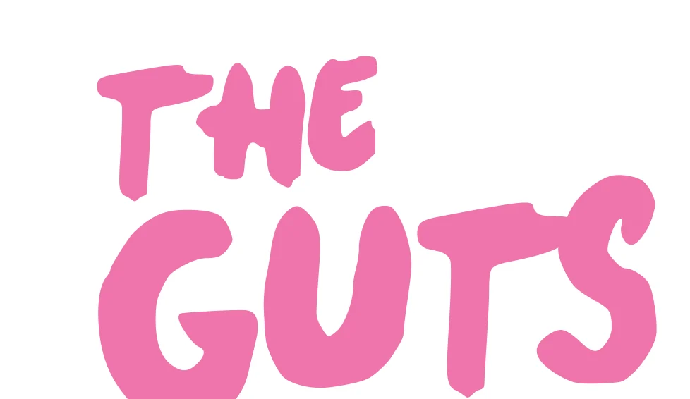
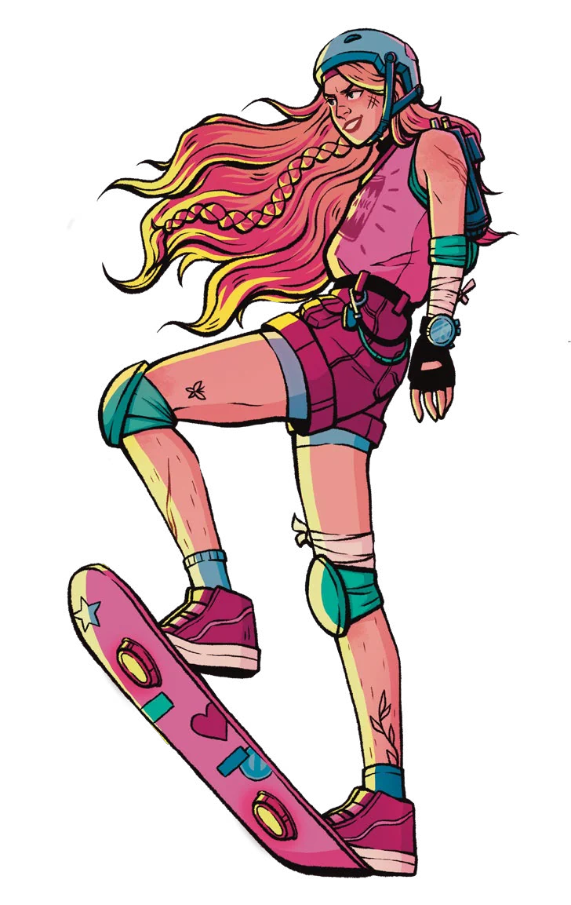

Du hast Selbstvertrauen, Kühnheit, Frechheit und Chuzpe. Du setzt auf dich selbst, stellst Konventionen infrage, wirfst alle Vorsicht in den Wind und gehst aufs Ganze. Deine Hoverboard-Tricks sind schnell, groß und unnötig gefährlich. Deine Hacks sind aufgemotzt, übertaktet und definitiv eine Brandgefahr. Hey, wenn du zu viel Angst hast, etwas falsch zu machen, wirst du nie etwas Großes tun, oder? S. 44
Spiel The Guts, wenn du große Risiken eingehen, viele Tricks machen, die lose Kanone spielen und Probleme mit großen Aktionen lösen willst.
Han Solo (Star Wars), San (Prinzessin Mononoke), Marty McFly (Zurück in die Zukunft), Tony Stark, GoGo (Baymax), Rainbow Dash, Raphael (TMNT) und Korra haben alle eine Menge Mumm.
+1 Style nach Touren, auf denen du Kühnheit oder Risikobereitschaft zeigst.

Ablatin-Helm, den du deinem Papa versprechen musstest zu tragen. Tolle Haare. Hoch-koffeiniert. Signatur-Gravitationsstrahl (Handschuh-Variante). Mathepanther-Biss. Frisches Stick-and-Poke, von dem deine Mama nichts weiß. Gratis-Wilkie’s-Merch, weil du so toll bist.| 1 | Königin |
| 2 | heißes Chaos |
| 3 | hochkoffeiniert |
| 4 | trägt das eigene Merch |
| 5 | entzündetes Nippelpiercing |
| 6 | Sonnenbrille drinnen |